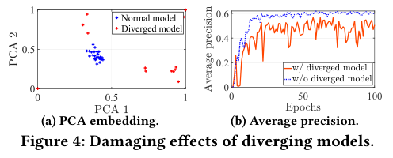

<!-- 封面页 --> <div class="middle center"> <div style="width: 100%"> # AutoFed <hr/> Presented by [@Albert2718](https://github.com/Albert2718) </div> </div> <!--s--> <!-- ============================= --> <!-- PART 1 OVERVIEW --> <!-- ============================= --> <div class="middle center"> <div style="width: 100%"> # Part 1. Background </div> </div> <!--v--> ## Autonomous Driving Autonomous driving (AD) is rapidly advancing and expected to improve **safety**, **traffic efficiency**, and **environmental impact**. A core requirement of AD is **reliable perception**— detecting vehicles, pedestrians, signs, and obstacles under diverse road and weather conditions. Modern AVs rely on **multiple onboard sensors**: - **Camera** – rich appearance, sensitive to weather - **LiDAR** – accurate geometry, limited by distance/adverse weather - **Radar** – long range, robust to fog/rain, low resolution >Multimodal sensing → complementary, real-time perception <!--v--> ## Multimodal Object Detection Deep learning–based object detection integrates these sensors to achieve accurate perception. Most systems follow a **two-stage pipeline**: 1. generate region proposals 2. classify objects & regress bounding boxes Many works show that **multimodal fusion** significantly improves robustness for autonomous driving. To simplify view alignment across modalities, many AV systems operate in **bird’s-eye view (BEV)** representations. <!--v--> ## The Need for Distributed Training Ideally, object detection models should be trained on data covering **all** road types, traffic patterns, and weather conditions. However: - Driving environments change constantly - It is impossible to collect a globally complete dataset Crowdsensing via large fleets of AVs is a natural solution, but traditional crowdsensing raises issues: - **privacy concerns** - **communication overhead** - **data sharing restrictions** <!--v--> ## Federated Learning for Autonomous Driving Federated Learning (FL) addresses these limitations: - Each AV performs local training - Only model updates (not raw data) are uploaded - A central server coordinates global aggregation FL enables privacy-preserving, scalable training across massive AV fleets, providing a practical way to leverage diverse, real-world driving data without centralized storage. <!--v--> ## Challenge: FL for Multimodal OD is Hard While FL works well for simple tasks (e.g., classification), FL for **multimodal object detection (OD)** is substantially more challenging: - OD models are **large and complex**, with chaotic loss surfaces - AV-collected data exhibit **strong heterogeneity** in: - annotations - sensing modalities - environments These issues may destabilize FL aggregation and seriously degrade model performance. <b>AutoFed aims to address these challenges for robust federated multimodal OD.</b> <!--s--> <div class="middle center"> <div style="width: 100%"> # Part 2. Main Problems: Heterogeneity </div> </div> <!--v--> ## 1. Label Heterogeneity > Different AVs provide **inconsistent or wrong labels**. - Missing objects → false negatives - Wrong boxes → polluted gradients - Inconsistent criteria → instability in FL aggregation Backpropagating wrong gradients harms the *global model*!!! <div class="center-img"> <img src="images/image-1.png" style="width:45%" data-preview-image> </div> <!--v--> ## 2. Modality Heterogeneity > **Not all vehicles have the same sensors.** - Some have LiDAR + Camera - Some have Radar only - Some have missing or malfunctioning sensing channels This creates **incomplete feature spaces** among clients. <div class="center-img"> <img src="images/image-2.png" style="width:45%" data-preview-image> </div> <!--v--> ## 3. Environment Heterogeneity > Training data come from diverse scenes. - Urban vs suburban - Day vs night - Weather conditions - Traffic density differences This leads to **diverged model updates**, causing slow or unstable convergence. <div class="center-img">  </div> <!--s--> <!-- ============================= --> <!-- PART 3 — SOLUTIONS --> <!-- ============================= --> <div class="middle center"> <div style="width: 100%"> # Part 3. Solutions to Heterogeneity </div> </div> <!--v--> ## Label Heterogeneity Solution ### Modified Cross-Entropy (MCE) ### Standard BCE: $$ BCE(p,y) = -\left[ y \log p + (1-y)\log(1-p) \right] $$ ### Modified CE: Adjusts gradient with a threshold `\(p_{th}\)` to reduce the influence of mislabeled samples. > Wrong labels will not dominate training anymore. <!--v--> ### Standard BCE Binary Cross-Entropy (BCE) is a commonly used loss function for binary classification. It measures the discrepancy between the predicted probability \(p\) and the ground-truth label `\(y \in \{0,1\}\)`. #### Definition: $$ BCE(p,y) = -\left[ y \log p + (1-y)\log(1-p) \right] $$ - If the true label is **1**, BCE penalizes the model when \(p\) is too small. - If the true label is **0**, BCE penalizes the model when \(p\) is too large. #### Purpose: - Produces small loss when predictions are close to the truth - Produces large loss when predictions deviate significantly - Widely used for the classification branch in object detection <!--v--> ### Modified Cross-Entropy (MCE) <div class="small-math"> `$$ \mathcal{L}_{\text{MCE}}(p,p^*) = \left\{ \begin{aligned} &0, && \text{if } p > p_{\text{th}} \text{ and } p^* = 0, \\ &- p^* \log(p) - (1 - p^*) \log(1-p), && \text{otherwise}. \end{aligned} \right. $$` </div> #### How to determine `\(p_{th}\)`? The answer is **Hyper-parameter Evaluation**  <!--v--> ## Modality Heterogeneity Solution ### Autoencoder-based Modality Completion ### Goal: To leverage the valuable information in the heterogeneous sensing modalities, we propose to fill in the missing data by leveragingthe relations among different modalities. ### Architecture: - **Encoder:** 4 conv layers - **Decoder:** 4 deconv layers - **Skip-connections**: preserve structure - **Activation:** ReLU / Sigmoid <!--v--> ## Modality Heterogeneity Solution ### Feature-Level Fusion with Cross-Attention Each modality learns from the **other** modality. Given feature maps $z_s$ and $z_{\bar{s}}$ (where $s \in \{\text{lidar}, \text{radar}\}$): Query from current modality $q_s = W_q z_s + b_q$ Key/Value from complementary modality： `$$k_s = W_k z_{\bar{s}} + b_k$$ $$v_s = W_v z_{\bar{s}} + b_v$$` <!--v--> ### Cross-Attention Output Attention weight: $$ \alpha_s = \text{softmax}\left(\frac{1}{\sqrt{d_k}} q_s k_s^T\right) $$ Enhanced feature: $$ z'_s = \alpha_s \, v_s $$ > Each modality **asks** the other modality for useful cues. <!--v--> ### Autoencoder-based Modality Completion  <!--v--> ## Environment Heterogeneity ### KD-Tree Based Client Selection ### Why? Environment heterogeneity causes **divergent updates**. ### Idea: Use PCA + KD-tree to measure client similarity. Server selects the *most aligned* clients for aggregation. ### Benefit: - More stable global updates - Avoids noisy gradients from outlier clients <!--v--> ### KD-Tree A **k-dimensional tree (KD-tree)** is a binary space-partitioning data structure for organizing points in a k-dimensional space. Its purpose is to **quickly find nearest neighbors**. <div class="mul-cols"> <div class="col"> <div class="center-img"> <img src="images/image-5.png" style="width:80%" data-preview-image> </div> </div> <div class="col">  </div> </div> <!--v--> ### How KD-Tree Selects Clients in AutoFed 1. PCA Embedding Each client update $\Delta w_i$ is reduced: $ v_i = PCA(\Delta w_i) $ 2. Build KD-Tree KD-tree indexes all vectors $v_i$ → enables fast nearest-neighbor search. 3. For each client: find M nearest neighbors $ S_i = \text{KDTree.query}(v_i, M) $ 4. Find the “most central” client $ d_i = \sum_{v_m \in S_i} \text{Dist}(v_i, v_m) $ $ i_{\min} = \arg\min d_i $ 5. Final selected clients $ S_{i_{\min}} $ <!--v--> ## Summary ```text Algorithm 1: AutoFed training Require: N is the total number of clients, c is the percentage of clients to choose. Data: {(L1, R1), ··· , (Ln, Rn), ··· , (LN, RN)} where (Ln, Rn) is the local collected lidar and radar data on the n-th AV. Server Executes: 1: initialize the global model w0^g at t = 0; 2: S ← {C1, ··· , CN}; 3: for communication round t do 4: for Cn ∈ S in parallel do 5: wt+1,n ← ClientUpdate(n); 6: Wt ← Wt ∪ wt+1,n; 7: M ← c × N; 8: W′t ← ClientSelection(Wt, M); 9: w^g_{t+1} ← ModelAggregate(W′t); ClientUpdate(n): 10: wn ← w^g_t (w^g_t is downloaded global model); 11: if Rn = ∅ then 12: Rn ← RadarImputation(Ln); 13: else if Ln = ∅ then 14: Ln ← LidarImputation(Rn); 15: for each local epoch e do 16: for each batch b do 17: wn ← SGD(wn, b); 18: return wn; ClientSelection(Wt, M): 19: Tt ← Construct k-d Tree(Wt); 20: for Ci ∈ S do 21: Si ← Query k-d Tree(Tt, Ci, M); 22: di ← Σ_{m=1}^M Dist(Ci, Cm) for Cm ∈ Si; 23: Imin ← arg min_i (di); 24: for Cm ∈ S_Imin in parallel do 25: W′_{t,Imin} ← W′_{t,Imin} ∪ wt,m; 26: return W′_{t,Imin}; ``` <!--s--> <!-- ============================= --> <!-- PART 4 — PERSONAL INSIGHT --> <!-- ============================= --> <div class="middle center"> <div style="width: 100%"> # Part 4. My Thoughts on AutoFed </div> </div> <!--v--> ## Pros — Cross-Modality Attention ### Transformer-style Q–K–V for Multimodal Fusion AutoFed adopts a lightweight cross-attention module directly inspired by *Attention Is All You Need*. - Queries come from the current modality (e.g., radar). - Keys/Values come from the complementary modality (e.g., lidar). - Allows the model to **selectively retrieve** helpful information. Cross-attention enables: >One modality actively asking the other for missing details. <!--v--> ## Cons <div class="mul-cols"> <div class="col">  </div> <div class="col"> when $p_{th}=0$, the paper means that MCE degenerate to BCE. However, when $p_{th}=0$, MCE will ignore any negative samples, which is not exactly the same as BCE. <!--s--> <div class="middle center"> <div style="width:100%;"> # Part X. My Questions <!--v--> ## Questions ### Framework vs Detail ### <!--s--> <div class="middle center"> <div style="width:100%;"> # Thank You! </div> </div>